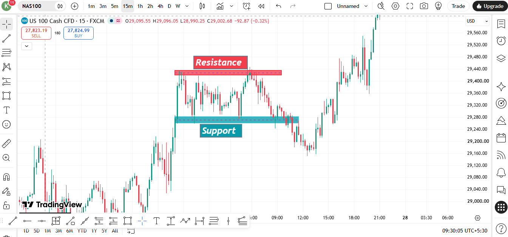
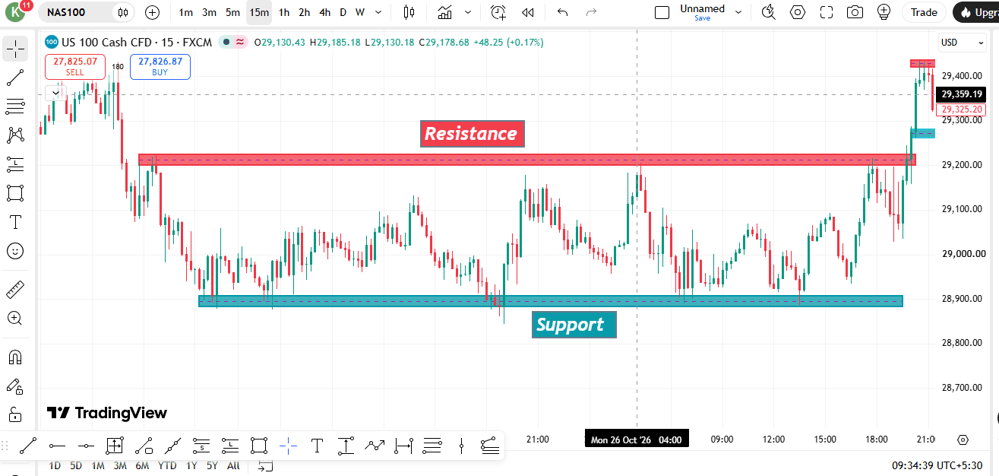
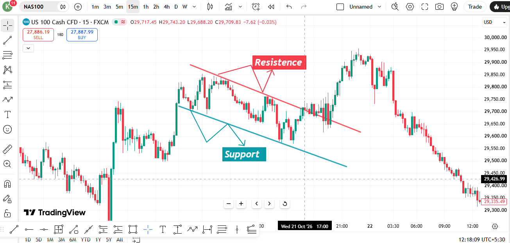
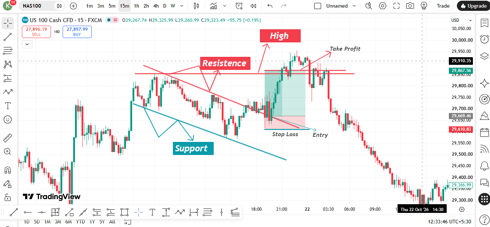

Support & Resistance
Support aur Resistance ki strong foundation banayein: important price zones identify karein, horizontal aur diagonal levels samjhein, bounce aur breakout ko read karein, aur risk ke saath trade plan banana seekhein. Yeh beginner course hai — signal service ya guaranteed trade setups nahi.
Is chapter ke end tak aap yeh sab kar paayenge:
- Support aur Resistance ke beech ka difference samjha paayenge.
- Visible Swing Highs aur Swing Lows ki help se zones mark kar paayenge.
- Horizontal levels, trendlines, channels aur possible role reversal ko pehchaan paayenge.
- Bounce, breakout, retest aur false breakout ko samajh paayenge — bina next move assume kiye.
- Trade lene se pehle invalidation point, target area aur position size plan kar paayenge.
Is chapter mein aap kya seekhenge
Is chapter mein Support & Resistance ki basics cover hongi: horizontal zones, Swing Highs aur Swing Lows, trendline support aur resistance, breakout ke baad role reversal, aur basic trade planning. Advanced ICT/SMC methods ko humne VIP Academy ke liye rakha hai.
Yeh sirf educational examples hain. Support aur Resistance important areas hain, predictions nahi. Hamesha current chart ko analyse karein aur risk manage karein.
What is Support & Resistance?
Support aur Resistance chart par aise areas hote hain jahan price pehle ruk chuka ho, reverse hua ho, ya aage badhne mein struggle kiya ho. Yeh un areas ko dikhate hain jahan buying aur selling ka pressure badalta hai. Price yahan react kar sakta hai, lekin koi bhi level reversal ki guarantee nahi deta.
SUPPORT
Current price ke neeche ya paas ka area, jahan pehle buyers ki activity itni strong rahi ho ki price ki fall slow ya reverse hui ho. Price yahan bounce, pause ya zone ko break bhi kar sakta hai.
RESISTANCE
Current price ke upar ya paas ka area, jahan pehle sellers ki activity ne price ki rise ko slow ya reverse kiya ho. Price yahan reject, pause ya zone ke upar break kar sakta hai.
Yeh sirf example hai: price dono zones par ek se zyada baar react karta hai. Kisi zone ke liye minimum touch count fixed nahi hota.
Yaad Rakhein: S&R hote hain ZONES, exact lines nahi hote. Reverse hone se pehle price zone ke thoda aage bhi ja sakta hai. Inhe exact price ke bajaye area ki tarah dekhein. Zone ki width instrument, timeframe, volatility aur recent price structure par depend karti hai; koi universal pip width nahi hoti.
Identify kaise karein? S&R on a Chart
Chart ko consistently read karne ke liye ye 4 steps follow karein:
Higher Timeframe par Jayein
Apne trading horizon ke hisaab se timeframe choose karein. Daily aur H4 charts broader zones identify karne mein help karte hain. Intraday traders context ke liye H1 ya M15 bhi use kar sakte hain. Higher-timeframe zones zyada clear ho sakte hain, lekin fail bhi ho sakte hain.
Find Swing Highs & Swing Lows
Price ke peaks (Swing Highs = possible Resistance) aur valleys (Swing Lows = possible Support) dekhein. Ye market ke natural turning points hote hain.
Multiple Reactions Wale Levels Mark Karein
Clear swing points aur meaningful price reactions observe karein. Do ya usse zyada reactions se zone ko identify karna aasaan ho sakta hai, lekin fixed touch count ko proof na samjhein. Baar-baar test hone se level weak bhi ho sakta hai.
Entry ke liye Lower Timeframe par Jayein
Agar detailed view chahiye, toh lower timeframe par jaakar candle closes aur price reaction study karein. Lower timeframe extra detail deta hai, certainty nahi.
Swing Highs ko connect karein → Resistance Line | Swing Lows ko connect karein → Support Line
Types of S&R Levels
1. Horizontal Support & Resistance
Aam taur par dekha jane wala TypeHorizontal zones previous Swing Highs ya Swing Lows ke aas-paas hote hain, jahan price ne reaction diya ho. Repeated reactions se zone notice karna aasaan hota hai, lekin har test level ko weak bhi kar sakta hai. Sirf touches ki ginti se strength decide nahi hoti.
2. Diagonal Support, Resistance aur Channels
Rising trendline meaningful higher Swing Lows ko connect karti hai aur dynamic Support ki tarah act kar sakti hai. Falling trendline lower Swing Highs ko connect karke dynamic Resistance ban sakti hai. Do lagbhag parallel trendlines ek channel show kar sakti hain. Inhe guide samjhein, exact barrier nahi — price inhe break ya cross kar sakta hai.
3. Role Reversal (S&R Flip)
Role badalne ki sambhavnaClear breakout ke baad purana Resistance, Support ki tarah act kar sakta hai — ya purana Support, Resistance ban sakta hai, agar price wapas us area par aaye. Yeh role change possible hai, automatic nahi; retest fail bhi ho sakta hai.
4. Round Number Levels
1.2000 aur 150.00 jaise prices natural S&R levels ki tarah act kar sakte hain. Horizontal S&R ke saath align hone par inhe extra attention mil sakta hai.
Support & Resistance ke Practical Chart Examples
Marked areas aur actual price movement ke beech ka relation study karein. Ye NAS100 screenshots horizontal zones, range boundaries, diagonal trendlines aur basic trade planning ke examples dikhate hain. Ye purane charts ke educational examples hain, live market calls nahi. Har zone ke aas-paas price ka behaviour samjhein — bina soche-samjhe trade copy na karein.
Example 1 — Horizontal Resistance Breakout
Horizontal Zone
Image ko full size mein dekhne ke liye chart par click karein.
Red area us price zone ko dikhata hai jahan pehle ke highs par Resistance bani thi. Neeche teal area woh zone hai jahan price ko pehle Support mila tha. Is example mein price baad mein Resistance zone ke upar move karta hai. Zone ke upar price ka move breakout ho sakta hai, lekin yeh permanent trend change ka proof nahi hai.
Kya Seekhna Hai
- Resistance ko previous highs ke aas-paas ek area ki tarah mark karein, overly precise line na banayein.
- Observe karein ki candle zone ke bahar close hoti hai ya nahi; sirf wick ka zone ke paar jaana fail ho sakta hai.
- Breakout ke baad dekhein ki price purane Resistance ke upar hold karta hai ya wapas range mein aa jata hai.
Example 2 — Trading Range: Support aur Resistance
Range Structure
Image ko full size mein dekhne ke liye chart par click karein.
Is chart mein price upper Resistance area aur lower Support area ke beech move karta hua dikh raha hai. Ise trading range kehte hain. Example ke pehle hisse mein price kisi bhi boundary ke bahar tikau move nahi banata. Baad mein Resistance ke upar ka move dikhata hai ki range ka breakout kaise ho sakta hai.
Kya Seekhna Hai
- Repeated aur visible reactions ki help se upper aur lower boundaries identify karein.
- Range ke andar price exact edge tak pahunchne se pehle bhi reverse ho sakta hai; isliye zone consider karein.
- Breakout continue ho sakta hai, lekin false breakout bhi hote hain. Bina plan ke first candle ko chase na karein.
Example 3 — Diagonal Support aur Resistance
Trendline Channel
Image ko full size mein dekhne ke liye chart par click karein.
Yeh chart descending price channel ke saath banayi gayi diagonal Support aur Resistance ko dikhata hai. Upper trendline lower Swing Highs ko connect karke dynamic Resistance ki tarah kaam karti hai; lower trendline lower Swing Lows ko connect karke dynamic Support dikhati hai. Is example mein price channel ke andar move karne ke baad lower boundary ke neeche break karta hai.
Kya Seekhna Hai
- Trendlines meaningful swing points se draw karein; har candle ke hisaab se zabardasti line fit na karein.
- Channel kisi move ki slope aur boundaries ka visual guide deta hai.
- Lower trendline ke neeche break price behaviour mein change ka signal ho sakta hai, lekin confirmation ka wait karein aur wider chart bhi analyse karein.
Example 4 — Important Zone ke Around Trade Plan
Samjhane ke liye Trade Setup
Image ko full size mein dekhne ke liye chart par click karein.
Yeh annotated example dikhata hai ki trader marked price area ke aas-paas trade plan kaise bana sakta hai — possible Entry, Stop Loss ka invalidation point aur Target ko dhyan mein rakhkar. Screenshot mein aage dikhaya gaya price movement historical chart behaviour hai; iska matlab yeh nahi ki har market condition mein same setup same result dega.
Kya Seekhna Hai
- Entry se pehle trade idea define karein: kaunsa price behaviour aapke setup ko support karega?
- Stop Loss ko us price area ke paar place karein jo trade idea ko invalidate karta hai; volatility aur spread ko bhi dhyan mein rakhein.
- Next relevant chart area ko dekhkar target choose karein aur check karein ki potential reward risk ke comparison mein sahi hai ya nahi.
- Agar setup clear nahi hai ya potential reward bahut kam hai, toh trade skip karna bhi sahi decision hai.
Yeh screenshots educational chart examples hain, live signals ya financial advice nahi. Chart conditions badalti rehti hain, aur koi bhi Support ya Resistance area bounce, breakout ya profit ki guarantee nahi deta.
How Price Reacts to Support & Resistance
Bounce Trade — Support par Buy / Resistance par Sell
Price ke marked zone tak aane ka wait karein. Phir dekhein ki price zone se reject hota hai, zone ke paar close karta hai ya clear direction nahi dikhata. Candle pattern context de sakta hai, lekin akela result ki guarantee nahi hota.
Apne trading plan ke hisaab se timeframe choose karke zone mark karein
Price ke us zone tak aane ka wait karein
Rejection candle (Pin Bar / Engulfing) ko dhyan se dekhein
Entry tabhi consider karein jab price ka behaviour aapke trade plan ko support kare
Stop Loss wahan place karein jahan trade idea invalid ho jata hai. Instrument ki normal volatility aur spread ko consider karein. SL distance fixed pips mein nahi hoti.
Breakout & Retest — Enter after flip
Price ke strong momentum ke saath level break karne ka wait karein. Entry lene se pehle dekhein ki price flipped level ko retest karta hai ya nahi.
Price strong candle ke saath Resistance ke upar break karta hai
Price ko chase NA karein — purane Resistance ke retest ka wait karein
Purana Resistance ab Support ki tarah kaam kar sakta hai → BUY consider karein
Stop Loss ko us point ke paar rakhein jo trade idea ko invalidate karta hai
False Breakout (Trap Trade) ko samjhein
False breakout tab hota hai jab price range ki boundary ke bahar nikalta hai, lekin phir wapas aakar range ke andar close ho jata hai. Yeh dono directions mein ho sakta hai. Candle close hone ka wait karein aur wider chart bhi analyse karein. Sirf range ke andar wapas aana reversal ka pakka signal nahi hai.
Risk Management ke Rules
Stop Loss lagane ke Rules
Stop Loss ko us area ya structure ke paar place karein jo setup ko invalidate karta hai. Distance chart aur instrument ke hisaab se set karein; universal pip rule follow na karein.
Apne trading plan ke rule ke bina Stop Loss move na karein; jaldi changes karne se original risk bhi badal sakta hai.
Agar price invalidation point tak pahunchta hai, toh Stop Loss ko aur door karne ke bajaye apne predefined exit plan ko follow karein.
Take Profit (TP) ke Rules
Check karein ki next meaningful price area tak Stop Loss distance ke comparison mein enough room hai ya nahi. Har setup mein 1:2 ratio suitable ya available nahi hota.
Opposite side ke next major S&R level par TP consider karein
Partial exit optional hai; entry se pehle exit plan define karein aur chart ke basis par decision lein.
Position Size kaise Choose Karein
Apni situation aur trading plan ke hisaab se chhota aur predefined risk amount choose karein. Kai traders low percentage risk karte hain, lekin har kisi ke liye ek hi figure sahi nahi hota.
SL distance ke basis par lot size calculate karein
Loss recover karne ke liye position size kabhi increase na karein
Trading ke liye sahi samay
Session activity instrument aur daylight-saving time ke hisaab se change hoti hai. Yeh assume na karein ki ek hi session hamesha best hota hai; apne instrument ke active hours check karein.
Relevant market hours aur scheduled news check karein. Sirf session open hone ki wajah se trade na lein.
Major news announcements ke time spread, volatility aur slippage badh sakte hain. Pehle decide karein ki aapki strategy in events ko avoid karti hai ya nahi; har instrument ke liye ek hi time window suitable nahi hoti.
Chapter 1 — poore chapter ka summary
Support = Floor (Buyers), Resistance = Ceiling (Sellers)
S&R ko hamesha zones samjhein, exact lines nahi
Repeated reactions wale level ko identify karna aasaan hota hai, lekin baar-baar test hone se level weak bhi ho sakta hai. Har reaction ki quality aur broader market context analyse karein.
Strong breakout ke baad purana Resistance Support ki tarah — ya purana Support Resistance ki tarah act kar sakta hai, agar price wapas aakar us area ko respect kare. Retest fail bhi ho sakta hai.
Apne holding period aur execution plan ke hisaab se chart timeframe choose karein.
Actual chart ke basis par Stop Loss aur Target plan karein, phir chosen risk amount ke hisaab se position size calculate karein. Agar available target risk ko justify nahi karta, toh trade skip karein.
Round numbers par traders ka attention ho sakta hai, lekin unki importance instrument aur market context ke hisaab se badalti hai.
Instrument-specific trading hours, spread, volatility aur scheduled events check karein. Sirf session open hona entry signal nahi hai.
Aakhri Practice — Chart ko samajhkar padhein
Apne charting platform par koi liquid instrument open karein aur apne plan ke hisaab se timeframe choose karein. Ek Support zone aur ek Resistance zone mark karein, phir apne notes mein in questions ke answers likhein:
- Kaunse visible Swing Points ne aapko har zone mark karne mein help ki?
- Kya price bounce hua, pause hua, zone break kiya ya zone par wapas aaya?
- Kaunsa price action aapke trade idea ko invalidate karega?
- Next meaningful area kahan hai jo target ki tarah act kar sakta hai?
- Kya potential reward risk ko justify karta hai — ya trade skip karna better hai?
Trade lena zaroori nahi hai. Goal hai clear aur evidence-based chart reading ki practice karna.